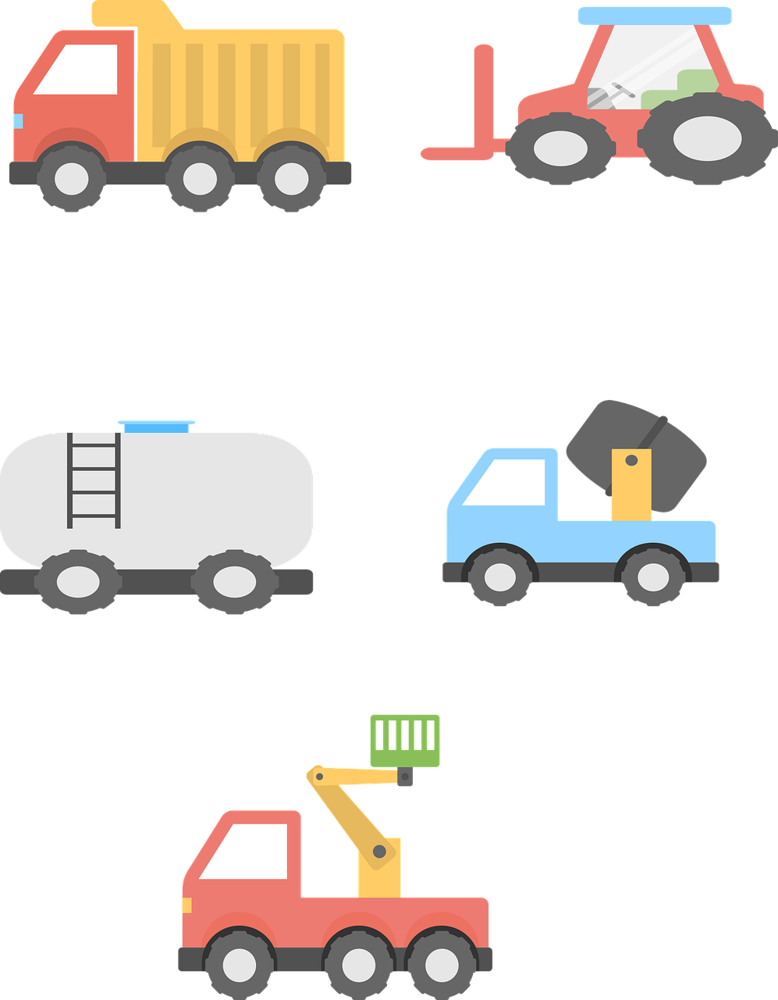
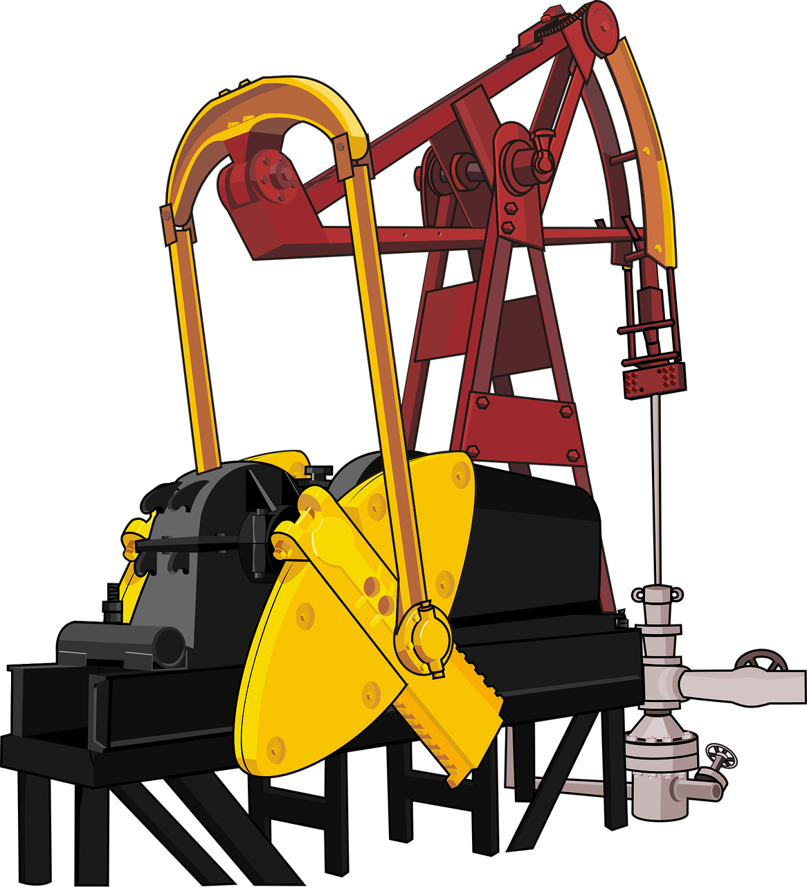
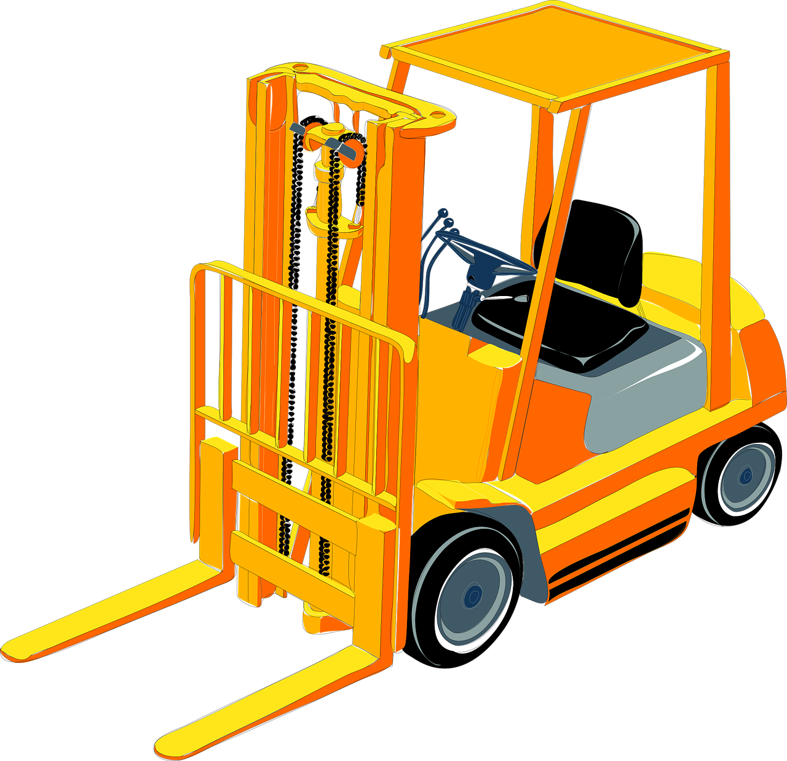
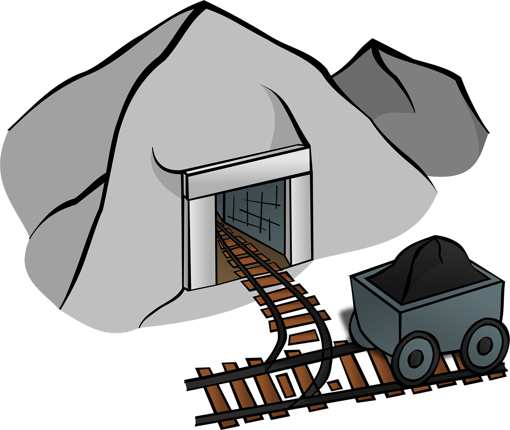
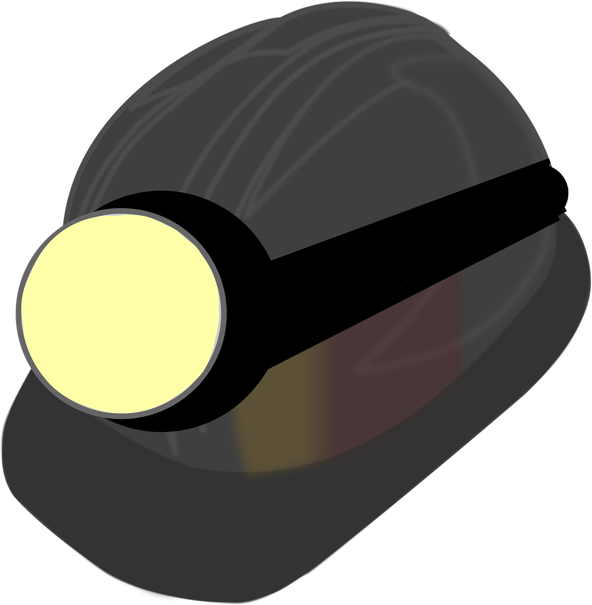
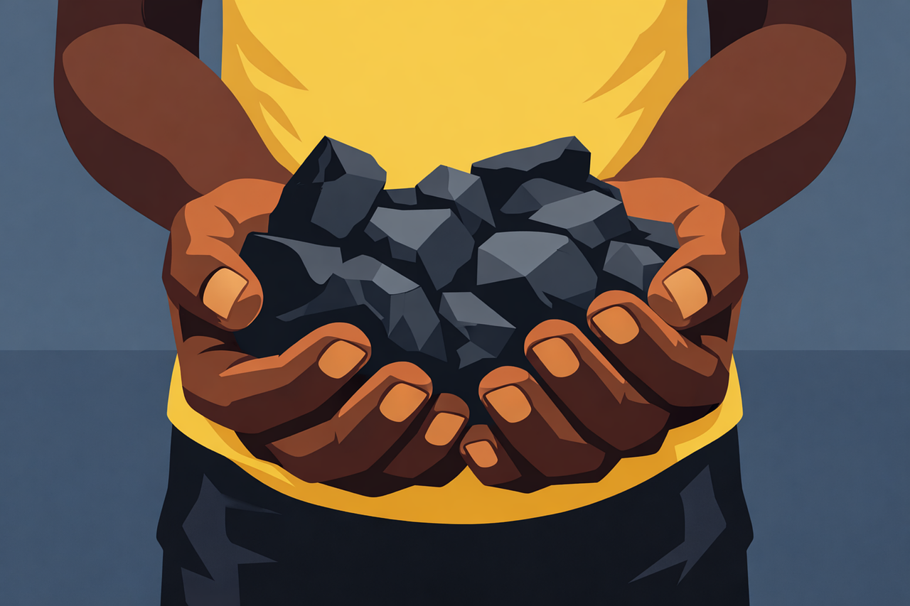

Информатор
Информатор
Техничкe школе "Колубара"


Руковалац механизацијом у површинској експлоатацији рукује машинама (багерима, булдожерима, ровокопачима, скреперима, грејдерима, киперима, средствима шинског транспорта, транспортнним тракама, сепараторима, дробилицама) за откоп, утовар, истовар и транспорт материјала.

Руковалац механизацијом у површинској експлоатацији
Руковалац багера цилиндрчног деловања
Руковалац рударским тешким возилима
Руковалац једниставном рударском механизацијом

Осим непосредног утовара руда и истовара допремљеног материјала, бави се и утврђивањем исправности радилишта, рашчишћавањем терена за минирање, физичким обезбеђивањем минског поља у свим фазама минирања, као и уситњавањем већих блокова. Такође, води рачуна о одржавању машина, проверава њихов рад, њихову исправност и отклања мање кварове. Прегледа терен и зону рада механизације.

Да би био остварен неометан рад термоелектрана и да би производња електричне енергије текла неометано мора се остварити потпуна производња угља на површинским коповима. Кључну улогу у функционисању површинског копа имају стручњаци рударства.

Школовање за рударског техничара траје четири године и у том периоду се ученици оспособљавају за организацију послова у директној производњи. Са завршеним школовањем за рударског тахничара и положеним матурским испитом добија се диплома РУДАРСКОГ ТЕХНИЧАРА.

Наставак школовања је могућ на било ком техничком факултету јер је у четворогодишњем школовању стечена правилна основа за упис било ког техничког факултета а на првом месту РУДАРСКО-ГЕОЛОШКОГ факултета у Београду.